Since 1988 the team has designed, built and raced eleven vehicles. Starting in 1988 with Photomoto, the team won the Great Canadian Solar Challenge, and since then has built ten other award winning vehicles.
| Year | Vehicle | Achievements |
|---|---|---|
| 1988 | Photomoto | 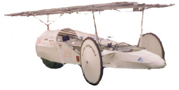 1st Place, Great Canadian Solar Challenge |
| 1990 | Sunquest | 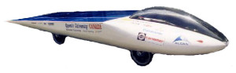 24th Place overall, WSC 1990 |
| First Canadian Team to ever compete at WSC
|
||
| 1993 | Sunquest II | 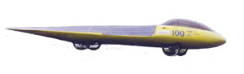 14th Place overall, Sunrayce 1993 |
| 1995 | Quest | 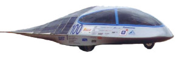 6th Place overall, Sunrayce 1995 |
| Top Canadian Team at Sunrayce 1995
|
||
| 1997 | Dawn Treader | 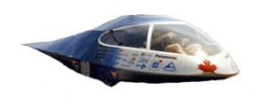 11th Place overall, WSC 1997 |
| Top Canadian Team, WSC 1997 | ||
| 10th Place Overall Finish, Sunrayce 1997 | ||
| Canadian Solar Discovery Challenge, National Champs | ||
| Canadian SDC Award for Technical Innovation, Solar Array
|
||
| 1999 | Kinetic | 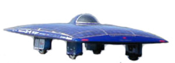 2nd Place overall, Sunrayce 1999 Qualifiers |
| 1999 | Radiance | 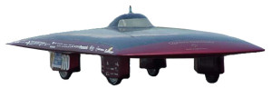 2nd Place overall Sunrayce 1999, WSC 1999 |
| Top Canadian Team at Sunrayce 1999, WSC 1999 | ||
| 2000 | SunTrek 2000, travelled 7044 km to enter the Guinness Book of World Records
|
|
| 2001 | Mirage | 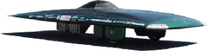 4th Place overall, ASC 2001 |
| 5th Place overall, WSC 2001 | ||
| Top Canadian Team at WSC 2001
|
||
| 2003 | Gemini | 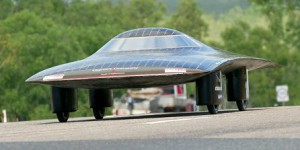 1st Place two-seater WSC 2003, ASC 2003 |
| Top Canadian Team at WSC 2003 | ||
| Best Array, Electrical System, “To Boldly Go” Award at ASC 2003 for two-seater design | ||
| Hans Tholstrup Award at WSC 2003 for the spirit of the WSC
|
||
| 2005 | Ultraviolet | 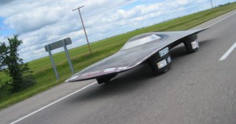 1st Place two-seater NASC 2005 |
| Winner of NASC “Never Give Up” Award
|
||
| 2007 | Aurum | 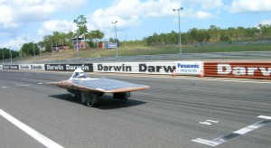 Finished 15th in Challenge Class at WSC 2007 |
| 2008 | Finished 12th (106:36:20) in the NASC 2008 |